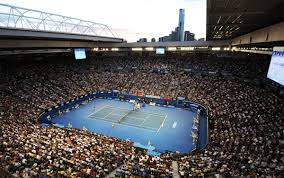
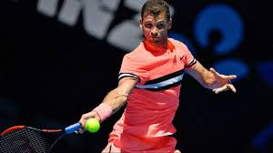

Dimitrov is the most successful Bulgarian male tennis player to date, both in terms of ranking reached—as of 2017 he is the only Bulgarian tennis player ever to be ranked inside the top 10 ATP Singles—and prize money won, being the only male Bulgarian player to reach US$1m[2] and later $10m. Dimitrov is also the first (and only) Bulgarian male tennis player to win an ATP title in singles (after he won in October 2013 at Stockholm) and reach a final in doubles (in 2011) as well as the only Bulgarian male player to reach the third round or better at a Grand Slam tournament. Dimitrov is also the first Bulgarian to qualify for, and later win, the ATP Finals.[3] He has won 8 ATP singles titles to date. Prior to his professional career, Dimitrov enjoyed a successful junior career, in which he held the world No. 1 ranking and won consecutive grand slam boys' singles titles at the 2008 Wimbledon Championships and the 2008 US Open, at the former he defeated future men's doubles No. 1 player Henri Kontinen in the final.
Dimitrov G. - Kyrgios N. 21.01.2018 10:00
Grigor Dimitrov
Dimitrov started his 2018 campaign in Brisbane, where he was the defending champion and top seed. He started from the second round with hard three set win against the home favourite and wild card John Millman, then overcame with another three setter the British number 2 Kyle Edmund. Dimitrov was eliminated in the semi-finals by the third seed and eventual champion Nick Kyrgios. The Bulgarian played in the doubles as well. Paired with Ryan Harrison, he reached the semi-finals, before withdrawing. Having started his campaign at Australian Open with a couple of wins against qualifiers Dennis Novak and Mackenzie McDonald, Dimitrov was drawn against Andrey Rublev who knocked him out in the second round of US Open just a few months ago. At the Round of 32 of the Australian Open 2018 he won 3-1 against Andrey Rublev and will face Nick Kyrgios in the Round of 16.
Nick Kyrgios
Nicholas Hilmy Kyrgios[2] (/ˈkɪriɒs/ KIRR-ee-oss;[3] Greek: Νικόλαος Χίλμη "Νίκος" Κύργιος;[pronunciation?] born 27 April 1995) is an Australian professional tennis player who is currently ranked world No.17 in men's singles by the Association of Tennis Professionals (ATP).[4] He won the boys' singles event at the 2013 Australian Open and the boys' doubles event at the 2013 Wimbledon Championships. Kyrgios' biggest achievements are reaching the quarterfinals of the 2014 Wimbledon Championships—defeating ATP number 1 Rafael Nadal and Richard Gasquet en route—and the quarterfinals of the 2015 Australian Open. Kyrgios is the second player after fellow Aussie Lleyton Hewitt to beat Roger Federer, Rafael Nadal and Novak Djokovic in their first meeting.[5] He has been controversial at times, for example admitting in 2017 that he had "probably" tanked at eight tournaments during his professional career, because on certain days he’d "rather be doing something else than playing tennis.
In his first tournament of the season at the 2018 Brisbane International, Kyrgios received a bye into the second round due to being the 3rd seed. In his first competitive match since the 2017 European Open, Kyrgios lost the 1st set against his compatriot, Matthew Ebden in a first-set tiebreak. However, he soon found his form and stormed into the quarterfinals through a hard-fought three set win. His next opponent would be Ukraine's Alexandr Dolgopolov. He once recovered from a slow start as he lost the first set, 6—1, to the crafty world no. 38. Like in his first match though, he found a way to power past the former world no. 12 and schedule a rematch of the Cincinnati Masters final against now world no. 3 and defending champion, Grigor Dimitrov. For the third match in a row, the Australian found himself a set down against the Bulgarian, who appeared set for a 3rd Brisbane final. Kyrgios, though, had other ideas blasting his way through the second set, 6—1 and forcing the decisive break out of Dimitrov in the third set to seal his 6th win out of 10 against top 3 opponents. In total, he would serve 19 aces in the semi-final encounter. He would play American Ryan Harrison in his first final on home soil after the American denied an all Australian final by seeing out wildcard and world no. 208, Alex De Minaur, who was appearing in his first ATP World tour semi-final. The one-time ATP titlist started brightly in the third match between the two as he had five break points in two of Kyrgios' first three service games. After failing to convert on any of these chances, the Australian pounced on his first opportunity to lead 4—3 and eventually see out the first set by 6 games to 4. From then on, Kyrgios stormed through the second set, breaking Harrison twice more to win his first title since Tokyo 2016. In by far his most convincing match of the tournament, Kyrgios returned back to the top 20, rising back to no. 17, narrowly missing out on a top 16 seeding at the upcoming Australian Open. At the 2018 Australian Open Round of 32 he defeated Jo-Wilfried Tsonga 7-6 4-6 7-6 7-6.